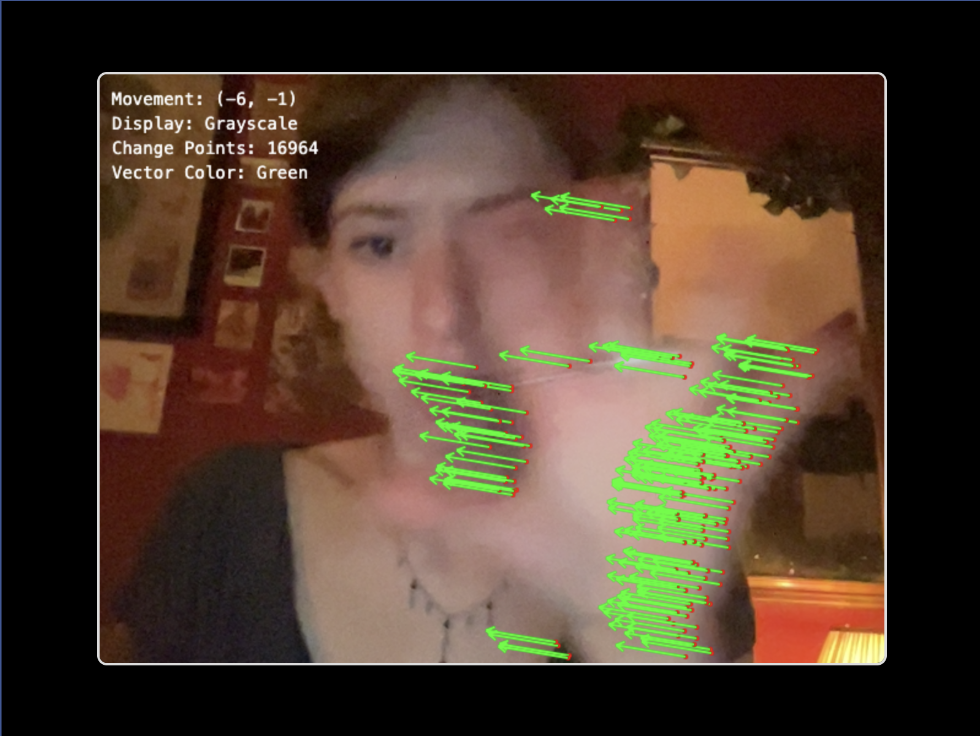
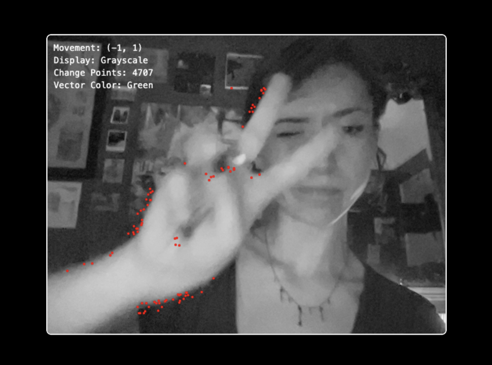
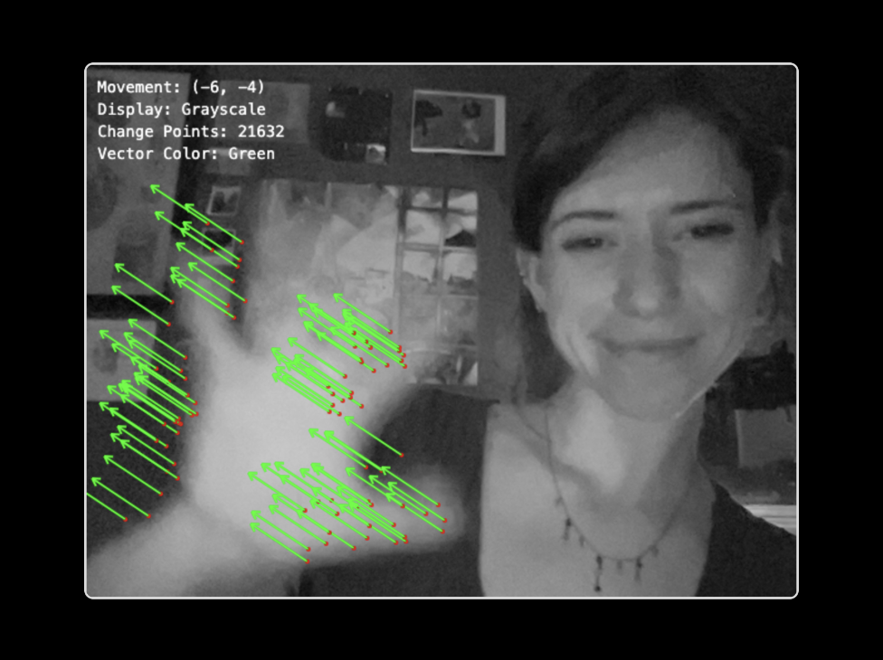
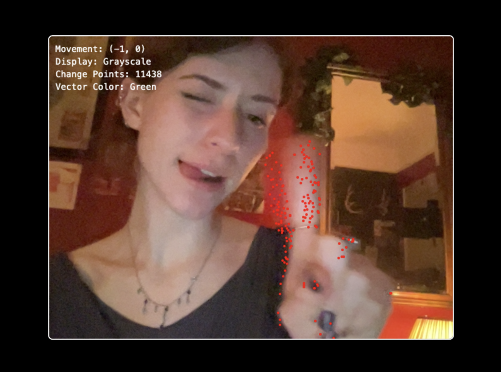
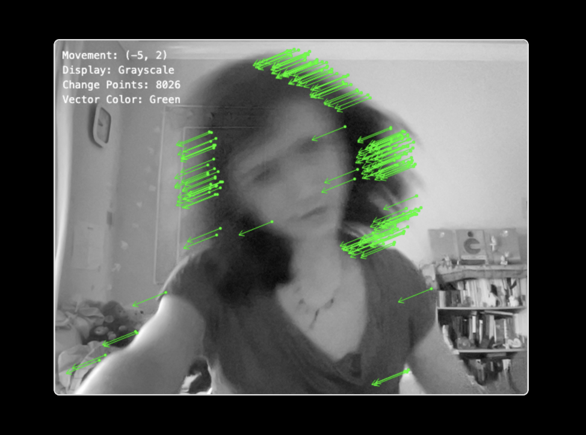
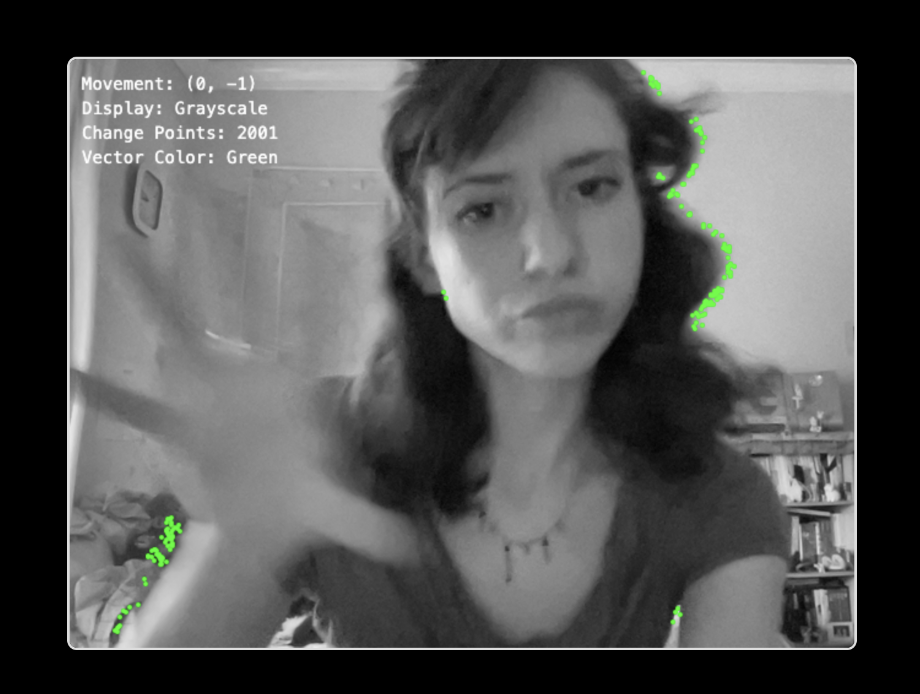

Detection:
Fine-tune by adjusting the sensitivity and vector scale
Webcam Filter:
Choose between colour and grayscale displays
Motion Colour:
Customize vector colors (red, green, or grey)
How it Works:
Tracks the center of mass movement and draws vectors from areas of change
toward the direction of motion, displaying trails of movement.





